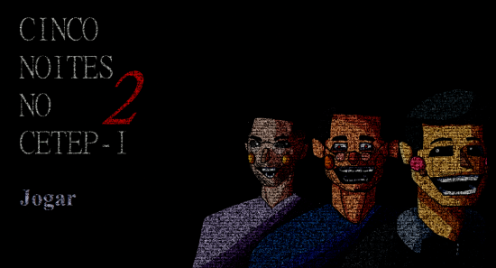

Conheça a wiki oficial de Cinco Noites no CETEP, o jogo que será apresentado na FETEC 2024! Explore todos os detalhes sobre a criação e desafios deste emocionante jogo de sobrevivência. Na wiki, você encontrará informações sobre a FETEC, informações sobre o desenvolvimento do site oficial e estratégias para vencer no guia de sobrevivência. Não perca a chance de se preparar antes de jogar!
O JOGO!
O QUE É O JOGO?
Na edição anterior da FETEC, realizada em 2023, destacou-se o projeto "Cinco Noites no CETEP", ficando em segundo lugar na competição colegial, um jogo inovador inspirado em Five Nights at Freddy's, adaptado para o ambiente escolar, trazendo humor e terror do cotidiano dos alunos. Este projeto não apenas refletiu a criatividade e o talento dos alunos, mas também exemplificou como a FETEC serve como um espaço fértil para o surgimento de iniciativas tecnológicas e educativas, utlizando do cenário anterior à reforma significativa da escola.
Utilizando a ferramenta Clickteam Fusion, Pedro Henrique Firmino criou "Cinco Noites no CETEP". Clickteam Fusion é conhecida por permitir a criação de jogos interativos complexos sem exigir grandes conhecimentos de programação. A ferramenta foi essencial para transformar o conceito do jogo em realidade, oferecendo uma plataforma acessível e poderosa para o desenvolvimento de projetos criativos. O jogo é inspirado no universo de Five Nights at Freddy’s (FNAF), mas traz uma reinterpretação única: os antagonistas são animatrônicos que representam professores robôs. Essa versão inovadora combina elementos familiares aos fãs de FNAF, com uma nova ambientação em um contexto escolar. O suspense e a tensão características de FNAF permanecem, mas com uma roupagem criativa e adaptada ao ambiente educacional.
A HISTÓRIA.
No passado, quando o colégio ainda era chamado Ciepa, um robô já aterrorizava o turno noturno. Chamavam-no MEICK S.O.N, Ele fora o primeiro protótipo a ser usado, mas sua obsolescência o deixara com falhas… falhas muito perigosas. MEICK se movia de forma errática pelos corredores, com seu corpo enferrujado e rangendo. Ele sempre surgia nos arquivos das câmeras do colégio, mesmo após ter sido desativado e quebrado décadas antes. E não estava sozinho. Sua variante, uma versão ainda mais descontrolada, aparecia como um reflexo distorcido, aumentando o terror das madrugadas no Ciepa. Quando juntos, esses dois causavam pane nos sistemas dos vigilantes e transformavam cada noite em um jogo sádico de perseguição. No futuro, o CETEP era aclamado por seus professores robôs que ensinavam com precisão absoluta. Mas quando o último estudante saía, e as luzes se apagavam, o colégio revelava seu lado mais sombrio. O turno noturno era controlado por três robôs: Breno, Lucas e Jhon. Mas havia um segredo terrível sobre eles.
Breno, ninguém podia encará-lo sem sentir um arrepio profundo. Uma vez que seus olhos vermelhos se cruzavam com os seus, era o fim. Sua programação inovadora o torna uma máquina de caça incansável. Ele estava sempre esperando, pronto para atacar a menor provocação. Lucas, por sua vez, era puro temperamento. Qualquer ruído ou movimento em falso o acionava, e ele avançava pelos corredores com uma fúria implacável. Sua inteligência, que deveria garantir reações rápidas e precisas, agora o transformava em um perigo ambulante para qualquer coisa que estivesse fora de ordem. E então havia Jhon. Jhon estava quebrado. Seu corpo metálico estava imóvel, abandonado em um canto escuro, incapaz de se mover como os outros. Mas havia algo muito errado com ele. Sempre que alguém se perdia no auditório, de alguma forma, inexplicavelmente, Jhon aparecia atrás de você. Os corredores do CETEP eram labirintos, mas o auditório era o verdadeiro pesadelo. Muitos vigilantes, tentando escapar de Breno e Lucas, se trancavam lá para se proteger. A porta de metal se fechava com um estrondo, e o silêncio tomava conta. Mas não demorava muito até que o barulho de algo… ou alguém… surgisse. Uma vez preso, o pânico tomava conta, e quando menos esperavam, sentiam uma presença fria e aterrorizante logo atrás. Jhon estava ali. Sem fazer ruído, sem se mover. Ele simplesmente surgia, como se sempre tivesse estado ali, observando o tempo todo.
A FETEC!
A FETEC (Feira de Empreendedorismo, Tecnológia e Ciências) é uma iniciativa que envolve tanto alunos quanto professores, estimulando o aprendizado prático e a aplicação de conhecimentos teóricos em situações reais. Ao longo do ano, os estudantes têm a oportunidade de idealizar e desenvolver projetos que refletem suas áreas de estudo, seja em tecnologia, ciências ou empreendedorismo. Essa experiência não apenas aprimora as habilidades técnicas dos alunos, mas também promove o trabalho em equipe, a resolução de problemas e a criatividade. Durante a feira, os visitantes podem explorar uma variedade de projetos inovadores, que vão desde protótipos tecnológicos a soluções criativas para problemas do cotidiano dos respectivos cursos do cólegio. A FETEC não só destaca o talento dos alunos, mas também fortalece o vínculo entre a escola e a comunidade, incentivando a troca de ideias e experiências.
O SITE!
Desenvolvimento
O site desenvolvido pelos alunos Ana Luisa Saraiva e Eduardo dos Santos, utilizou as tecnologias HTML, CSS, JavaScript. Essa combinação de ferramentas formou uma base sólida para o layout, funcionalidade e responsividade do site. As tecnologias permitiram criar uma interface moderna e acessível, adequada para a divulgação do jogo e proporcionando uma experiência de usuário agradável.
Objetivo
O objetivo principal do site é auxiliar na divulgação do jogo "Cinco Noites no CETEP", deixando de fácil acesso informações rápidas sobre o jogo e disponilizando o download ao mesmo tempo que proporciona uma oportunidade de aprendizado para os desenvolvedores. O projeto permite que os criadores aprimorem suas habilidades de programação e design enquanto contribuem para um produto que incentiva a criatividade e o desenvolvimento pessoal.
GUIA DE SOBREVIVÊNCIA.
Se você está lendo isso, significa que deseja assumir o posto como segurança noturno em um lugar infame por seus “animatrônicos”. Deixe-me te dar um aviso: essas coisas não são só robôs normais. Eles têm uma programação antiga e errada, um comportamento estranho, e se você não for cuidadoso, bem…você pode não sair daqui. Preste atenção em cada detalhe deste guia se quiser sobreviver.
GERENCIE BEM SUA ENERGIA
A primeira coisa que você vai perceber é que a energia não é infinita. Isso quer dizer que você precisa economizar cada gota de eletricidade. Se acabar, todas as portas e luzes desligam, e você ficará completamente exposto. Aí, amigo, é o fim.
MANTENHA A CALMA
Eu sei que isso vai parecer impossível quando você vê essas coisas se aproximando, mas a calma é sua maior arma. O pânico vai te fazer errar, gastar energia à toa e, eventualmente, cometer erros fatais. Respire fundo, siga os padrões que você aprendeu, e não se precipite.
SE NÃO DER CERTO...
Se, no fim das contas, tudo falhar — portas não fecham, energia acaba, os animatrônicos estão todos à espreita — feche os olhos e espere. Às vezes, o susto do ataque é menos doloroso do que o terror de vê-los se aproximando. Boa sorte. Se você seguir essas dicas, pode ter uma chance. Se não, bom...eu te vejo do outro lado.